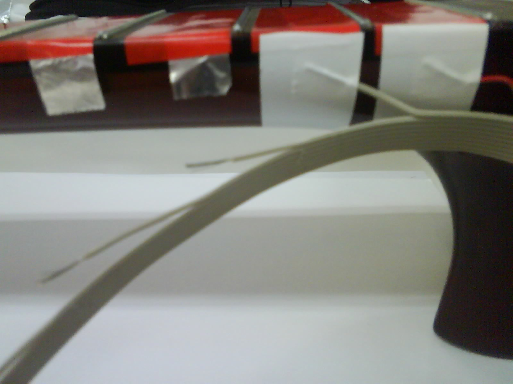
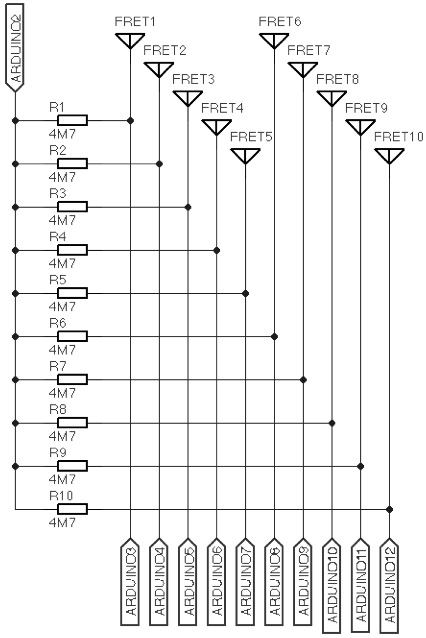
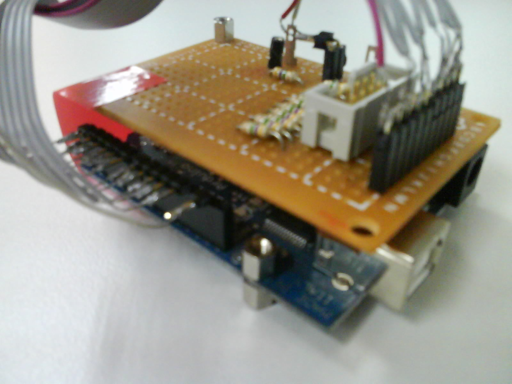
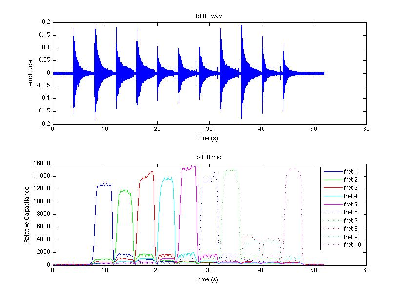

Introduction
Our gesture acquisition system focuses on the gestures performed by the left hand. Left hand movements information is crucial for studies on the analysis of specific performers but also for studying the identification of nuances in guitar solos. This system has to be able to capture both macro-scale changes (i.e. the presence of finger bars) and micro-scale changes (i.e. vibrato) in player's movements. Moreover, the proposed sensors have to be non-intrusive to the player.
Capacitive sensors
Most of the existing proposals for left hand gesture caption in guitar playing are based on optical or image techniques. Although these systems have proved to provide successful results, under our point of view, they can reduce the player's mobility in live performances. Moreover, after observing several guitar players, we realized that the fingers do not perform a big pressure on the fingerboard, and even, do not necessarily touch the fingerboard (specially in high pitches). Assuming this fact, what we need is a distance sensor that measures the distance between the fretboard and the fingers. Capacitive sensors perfectly accomplish all these requirements.
Capacitive sensors are based on the change of capacitance of two conductive electrodes in a dielectric. The capacitance is the ratio of electric charge over a voltage:
C=q/V
where 'C' is the capacitance in Farads [F], 'q' is the charge in Coulombs [Q], and 'V' is voltage in Volts [V]. The capacitance of an ideal capacitor built up with two conductive parallel plates is computed as:
C=ε0 εr · S/d
where 'ε0' is the vacuum permittivity (8.85·10-12 [F/m]), 'εr' is the relative permittivity of the medium (1.0005 for the air, adimensional), 'd' is the distance between the two plates in [m], and 'S' is the plate area in [m^2]. When using capacitors as sensors, their capacity inversely changes on the distance between the electrodes. But in our configuration, we use the load mode defined by Miranda[1] in which the distance between the electrode and a single object (the performer's finger in our case) is measured through a change in capacitance of the electrode to ground.
Setup
We take the advantage of the Arduino prototyping platform, and the CapSense library to convert the guitar frets into a set of capacitive sensors. The performer's finger is able to modify the electromagnetic field measured by the aluminum foil mounted on each fret on the fretboard (See Figure 1 for details).

Figure 1: Construction of the capacitive sensors using aluminum foils.
The aluminum foils are covered by plastic tape acting as a dielectric. External electronics are required to convert the digital inputs and outputs of the Arduino to capacitive sensors. The schematics consists in a set of resistors connected between the Arduino and the foil, as shown in Figure 2.

Figure 2: Conditioning circuit between the Arduino and the capacitive sensors
All the sensors are excited with the same impulse from the Arduino (Arduino02) and measured at independent inputs (from Arduino03 to Arduino12). Figure 3 shows a snapshot of the built main board.

Figure 3: Main board of the conditioning circuit for capacitive sensors
Collected data
Collected sensor data is sent to the computer through different MIDI channels, using the Pitch Bend message for a higher resolution. The sampling rate is about 30[Hz] and, using a MIDI sequencer, it can be perfectly synchronized with audio data from a microphone or an hexaphonic pickup. Figure 4 shows an example of audio and gesture collected data while applying a bar from frets 1 to 10 at 60bpm, 4/4 bar.

Figure 4: Audio and gesture collected data while applying a bar from frets 1 to 10.
We refer the reader to the paper "A left hand gesture caption system for guitar based on capacitive sensors" detailed in our publications page.
Bibliography
[1] E. Miranda and M. Wanderley. "New Digital Musical Instruments: Control And Interaction Beyond the Keyboard". Computer Music and Digital Audio Series. A-REditions, Inc., 1st edition, 2006.